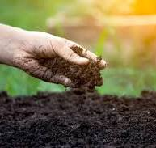
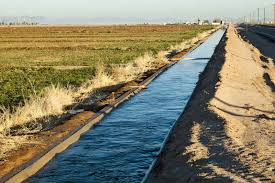
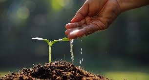

🌿 Soil Moisture — Key Points
- Soil moisture is the water held within the soil's pore spaces and is crucial for agriculture, climate regulation, and predicting natural disasters like floods and droughts.
- It is a dynamic variable, influenced by factors such as precipitation, soil type, and vegetation, and it directly impacts plant growth and energy exchange between land and atmosphere.
- Plant Growth: Proper moisture ensures that plants get enough water for photosynthesis and nutrient transport.
- Irrigation Management: Monitoring soil moisture helps farmers decide when and how much to irrigate, reducing water wastage.
- Weather and Climate Studies: Soil moisture influences temperature, humidity, and rainfall patterns.
- Preventing Crop Failure: Knowing soil moisture levels can help prevent drought stress or overwatering issues.


